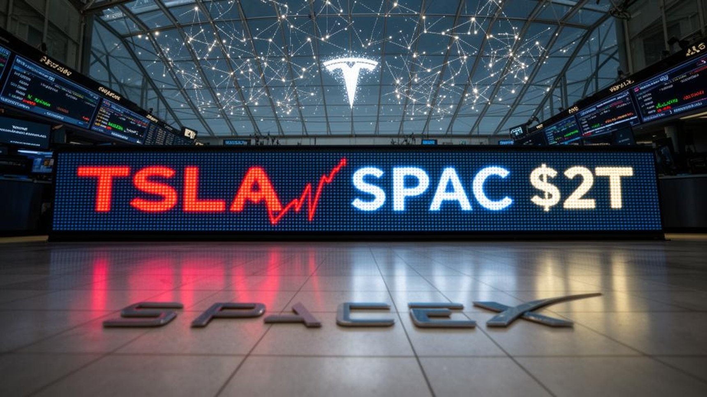

On June 12, SpaceX went public in the largest IPO in history, priced at $135 a share and valued at roughly $1.77 trillion. Within two days, the stock had soared past $225, briefly making the company more valuable than Amazon. By the following week, it had given back nearly all of it — sliding more than 24% from the high in a matter of days, at one point dipping below its own IPO price entirely.
If you only watched this unfold in real time, it would look like a verdict: the hype was wrong, the valuation was too rich, the excitement didn't hold up. But if you've watched enough IPOs play out over the years, this isn't a verdict. It's the pattern.
The Pattern, Not the Exception
Markets analysts who track new listings closely have pointed out that roughly 90% of IPOs eventually trade below where they opened — not necessarily below where they end up years later, but below that first triumphant print. The first-day pop is, more often than not, the easy part. What follows — the market actually deciding what the company is worth without the launch-day euphoria — is where the real price discovery happens, and it's rarely a straight line up.
The mechanics are almost always the same: a surge driven by scarcity and hype, a pullback as early buyers take profit and the float opens up, and then a slower, uglier search for what the market is actually willing to pay once nobody's watching the ticker out of excitement anymore.
Tesla, 2010: The Closest Comparison
Tesla's IPO in June 2010 is the most direct historical parallel to SpaceX, and not by accident — both are Elon Musk companies, both launched in June, and both launched in the June of a U.S. midterm election year. From its IPO, Tesla rallied about 60%. Then it gave it back: within four to five trading days, the stock had dropped roughly 50% from that high, retracing almost the entire move.
SpaceX's path so far has rhymed closely — up about 50-67% from its IPO price at the peak, then a retracement of more than 20% over a similarly short stretch of days. The market caps involved are wildly different — SpaceX priced at a valuation many multiples larger than Tesla's in 2010 — but the shape of the move, the timing, and the speed of the reversal line up almost too neatly to ignore.
Facebook, 2012: When It Gets Worse Than This
Facebook's 2012 IPO is the case worth remembering whenever a pullback feels alarming, because it was considerably uglier than what SpaceX has experienced so far. Facebook didn't even get a triumphant first day — shares closed barely above the $38 offer price, and by the very next trading day, the stock had already broken below it. From there, it kept falling. Within about three months, Facebook had lost more than half its value, bottoming below $18 in September 2012 — a stock that the financial press at the time openly called a "fiasco." It took over a year for shares to climb back to the original $38 IPO price.
A stock priced at $38, cut in half within three months, taking more than a year just to get back to even — and that company is Meta Platforms today, one of the most valuable companies on earth.
Anyone who panicked and sold during that drawdown locked in a real loss on a company that went on to become a multi-trillion-dollar enterprise. Anyone who kept buying through the decline — or simply held — was holding a position worth roughly five times their entry price within several years, dividends aside.

CoreWeave, 2025: The Whiplash Is Normal
The most recent major tech IPO before SpaceX tells a similarly volatile story, compressed into a much shorter timeframe. CoreWeave priced its March 2025 IPO at $40 a share. Day one: a flat close right at the offer price. Day two: a drop of more than 10%, pushing the stock below its own IPO price. Day three: a 42% rally that erased the entire decline and then some.
From there, CoreWeave kept climbing — at one point trading more than 250% above its IPO price — before a sharp 46% drop in November 2025 following an earnings report that rattled investor confidence. As of this article, CoreWeave trades in the neighborhood of $105-118 a share — roughly two-and-a-half to three times its $40 IPO price, despite two separate violent drawdowns along the way.
What This Actually Means
None of this is a prediction that SpaceX specifically will follow the same script — every company's fundamentals eventually matter, and not every IPO recovers. Some, like several recent energy and consumer listings, have simply stayed underwater for a long stretch. The point isn't that every IPO is a buy on the dip. It's that a sharp post-IPO drawdown, on its own, tells you almost nothing about where a company ends up. Tesla, Facebook, and CoreWeave all gave investors a genuinely frightening chart in their first weeks or months as public companies. In every one of those cases, an investor who reacted to that fear by selling — or who simply never got back in — missed the part of the story that actually mattered.
This is precisely the situation dollar cost averaging is built for. A lump-sum buyer who puts everything in on day one is fully exposed to exactly this kind of whiplash — and exactly the kind of fear that makes people sell at the worst possible moment. A DCA approach absorbs it differently: a drawdown like Facebook's −53% or CoreWeave's −46% isn't a crisis to react to, it's simply more shares bought at a lower price, funded by money that was always going to be invested anyway. The volatility doesn't go away. What changes is whether it works for you or against you.
Price and timeline data compiled from public market reporting on Tesla (2010), Facebook/Meta (2012), CoreWeave (2025), and SpaceX (2026) IPOs.